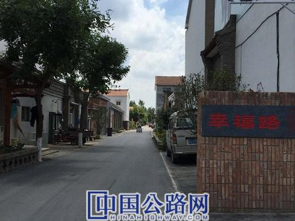
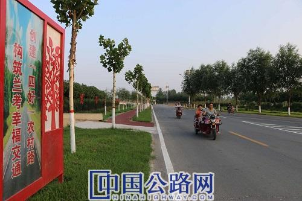

您好，欢迎来到中国高速公路网—21世纪公路网！
 作者：范永伟
来源：中国高速公路网—21世纪公路网
作者：范永伟
来源：中国高速公路网—21世纪公路网
 时间：2020-12-28
时间：2020-12-28
近日，走在河南开封市兰考城区内，只见路畅街净，绿树成荫，活水绕城的美好场景让人心情舒畅；而行走于乡村间，这种感觉尤甚，首先是道路与两边的绿化形成的美丽画面让人应接不暇，其次是一村一品，一村一景，一村一韵的多彩交通新画面让人感觉新奇而美好，尤其是公路两边的狗牙根草更像是在公路两边铺了两块绿毯，平添了几分美好怡人。
兰考交通运输局局长田本泉说，这几年来，兰考县实施部门联动、共建共享，推进普通干线公路与农村公路建设一体发展，实现普通干线公路与县道互通、县道与乡道相连、乡道与村道相接，形成城乡贯通、干支相连的公路交通网络；推进普通干线公路与农村公路路域环境综合提升，统筹公路管养示范工程、水系连通工程、廊道绿化工程和城乡物流体系建设、路域文化及服务功能提升；文旅特色示范带、产业示范带、美丽乡村示范带的创建，以路为轴、辐射提升，推动了“四好农村路”的进一步升级。

“高标准”打造“四好农村路”升级版
“人家都是村村通，俺们是户户通！”在兰考县张庄村幸福路上，看着新修的路两旁红墙黛瓦、装饰古朴的店铺开门迎客，张庄村支部书记申学风自豪地说，张庄由贫困村到小康村，成为一个进得来，留得住，被社会各界称为“梦里张庄”。申学风说，“四好农村路”起到很大的助推作用。
在倾力打造建设“四好农村路”的过程中，兰考县坚持高标准，高要求。在消灭断头路、串村联片、完善路网中，兰考县以“四纵六横”为骨架，强力推进农村公路建设的“兰考标准”。新建县道路面宽度不低于11米、乡道不低于7.5米、村道不低于4.5米，附属设施同步设计、同步实施。2014年以来，兰考县通过“十、百、千”示范工程、“三年行动计划”通村畅通等工程大力推进项目实施，共完成投资近10亿元，建设农村公路1025公里（县乡道119.65公里、村道905.35公里），改造危桥952延米。打通了“断头路”、修通了“兴企路”、架起了“连心桥”，“四横六纵”产业廊道基本形成。
田本泉介绍，按照“建养并重、养护为先”的发展思路，兰考县积极探索创新，投入200余万元建设了考城镇中心养护站，提高了偏远乡镇的养护水平和应急抢护能力；县财政投入6021万元，全县配备护路员，购置洗扫车、高压清洗车、道路养护车等车辆150余辆，形成了机械化定时清扫与人工日常养护的有机互补，经常性养护率县道、乡道、村道达100%，农村公路实现“全路无垃圾、行车无扬尘”。
如今，全县农村公路沿线路肩培护加宽，路肩宽县乡道不低于5米，且植树加种植本地狗牙根草进行绿化，路肩外侧开挖5米绿植边沟，边沟外侧县道30米、乡道20米绿化带，村道路肩外侧开挖2米绿植边沟，村道5米绿化带。沿路绿化，因地制宜，树种分段统一，加强修剪管护，为下一步农村公路拓宽改造打下了基础。同时，针对沙土路肩易冲刷的特点，种植了根系发达、生命力强、价格便宜的本地狗牙根草，实现了平常道路冲洗既保洁了路面，也滋润了草坪的效果，为下一步农村公路拓宽改造留足了空间。

“生态路”推动由净到美新转变
道路绿化一般种植绿化树木和绿化草皮为主。狗牙根草很少见。而在兰考县修好的兰仪路两旁却种植着本地狗牙根草，成为兰考独特的防路肩易冲刷海绵路肩管护“兰考做法”典型代表。
田本泉说，这种防路肩易冲刷海绵路肩主要是针对沙土路肩易冲刷的特点，采取路肩比路面低于3公分至5公分的海绵路肩办法。这一养护做法得到河南省主要领导的认可和好评，并多次在重要会议上给予肯定。
今年8月上旬，兰考县遭遇了有气象记录以来最强降雨，一周内连续两次小时雨强超过80毫升/时，全县农村公路几乎无受损，这与采用路肩比路面低于3公分至5公分的海绵路肩的做法有关。
在打造生态公路同时，生态廊道建设也成为兰考的又一建设亮点。三年来，全县114公里普通国省干线公路、692公里县乡道按照生态廊道建设标准全部完成，村道完成500公里（村道共898公里），全部实现“路田分家、路宅分家”，形成了兰桐大道、兰仪路、兰坝路、安澜路、程南路等“一路两沟、一路一景”“三季有花、四季有彩”畅洁美安的路域彩链。
可以说，近年来，兰考以建设美丽生态宜居兰考为目标，以综合提升路域环境为重点，以路为媒、以路为缘，不仅形成了路相通、沟相连、林成网，城乡贯通的美丽经济交通走廊，还成功打造了“四好农村路”升级版。国、省、县、乡四级公路均大力实施创“四好”标准建设，形成了“路河相伴、路林相依”的生态彩链，实现“路田分家产业兴、路宅分家出行安”的乡村振兴美丽画卷。
如今，畅游在兰考兰仪路、兰坝路等旅游线路上游客无不为“路肩铺地毯，给路打上伞”的兰考廊道建设交口称赞。
“富民”强音推动交通互通互联新气象
“拼搏的兰考人，为了路域环境，畅洁美安，洒下血和汗，路田分家产业旺，路宅分家出行安，路林相依，路河相伴，生态廊道通门前，一幅幅美丽画卷和谐自然，换来了互通路网多壮观.....”
这首老百姓写下的赞歌里，描述的就是兰考这几年公路交通发展变化的真实场景，称赞的就是兰考交通人扎扎实实推动“四好农村路”高质量发展付出的心血和汗水。
徐场村真秦乐器有限公司的老板徐平卫，曾经“漂”在上海，在当地的牡丹乐器厂务工，2014年他毅然返乡创业办公司生产古筝，如今生意红红火火。“以前给别人干，现在自己干，还真得感谢这几年的交通发展，每天物流车到村口，不出村就能把乐器发到全国各地。”徐平卫说，得益于兰考“农村公路+物流”的发展。
在叫响民族乐器、“兰考蜜瓜”这些品牌，助推产业发展中，“四好农村路”起到了很大的促进作用。“兰考蜜瓜”主产地葡萄架乡杜寨村前期发展蜜瓜产业时，交通成为阻碍产业发展的一个瓶颈。产量、销路和运输是至关重要的几个环节。为助力这一产业的兴旺发展，在“四好农村路”建设中，兰考县坚持“城乡统筹、以城带乡、城乡一体、客货并举、运邮结合”总体思路，加快完善农村公路运输服务网络，推进“农村公路+客运”“农村公路+物流”，基本形成县、乡、村三级公交网络。同时，兰考县还积极与郑州现代物流合作建设农村物流三级体系，实现县有配送中心，乡镇、村物流服务站、服务点全覆盖。如今，运营的便利通畅让兰考县葡萄架、闫楼、小宋等10个乡（镇）117个行政村种植的2万多亩“兰考蜜瓜”没有了运输的后顾之忧。
同时，为了方便群众出行，兰考县投资6750万元，建设了郑徐高铁兰考客运枢纽站，实现了铁路与公路“无缝衔接”和乘客“零”换乘。建成了10个乡镇综合服务站、520多个城乡公交站牌，200个农村淘宝村级服务站正在建设，交通运输设施日臻完善。开通26条城乡客运线，城乡客车177辆，日发班次529个，运送乘客16000人次，基本满足群众的出行需求，路途经村张贴“村村通客车公示牌”，确保村村通客车开得通、留得住。
“苦心人天不负”。2016年，兰考县成功创建城乡客运一体化示范县，2018年9月被国务院扶贫办、农业农村部、交通运输部命名为“四好农村路”全国示范县，2019年被评为河南省万村通客车提质工程示范县、“公交优先”示范城市，2020年被评为全国深化农村公路管理养护体制改革试点地区（县级），2020年兰考县交通运输局被评为全国交通运输系统先进集体、全国交通运输行业文明单位。目前，全县农村公路通车总里程1590公里，营运公交车辆7522辆，全县454个行政村通硬化路率、通客车率100%。一路走来，一幅幅路畅景美人幸福的多彩交通画面在豫东大地上铺开。
【编辑：孙婧 TEL：010-84990788-1226】
【审核：耿茁】
 微信公众号
微信公众号
 微信订阅号
微信订阅号